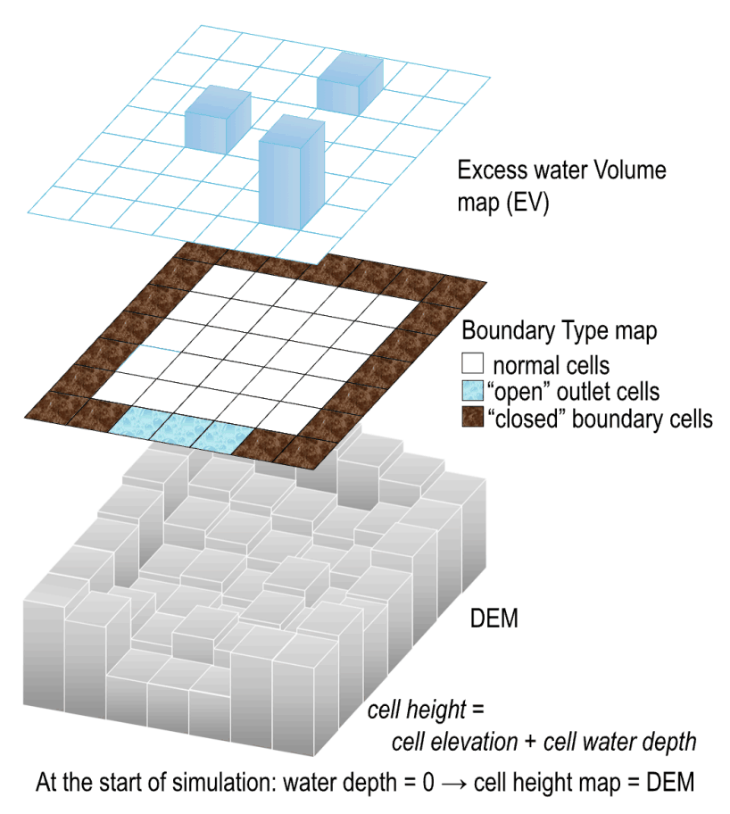
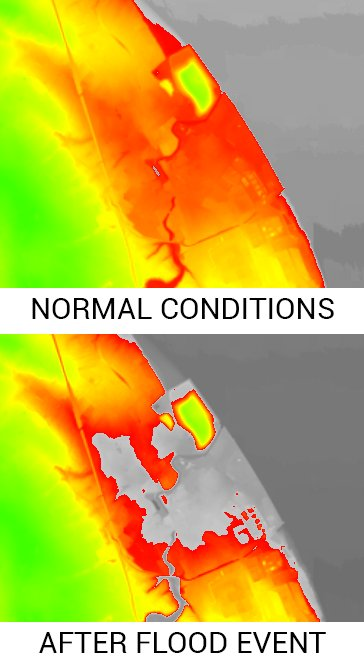
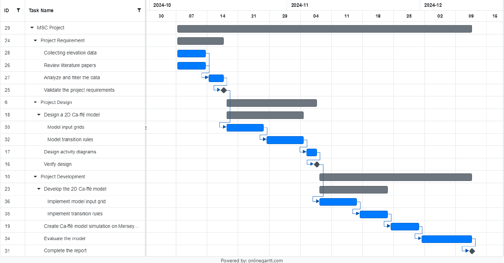

Case Study — Group Research Project
Merseyside River: A CA-ffé Simulation of Potential Flood Damage
A seven-person MSc research project simulating worst-case flood damage from a proposed tidal barrier on the River Mersey, balancing clean-energy ambitions against flood risk to Liverpool and Wirral.
Overview
Merseyside City Council proposed building a ~2km tidal barrier along the River Mersey, spanning Liverpool and Wirral, to generate clean energy from the ebb and flow of the tide while doubling as a greenway and cycle path connecting the two banks. Our project investigated the worst-case scenario: a once-in-a-century flash flood event, and what damage it could cause given the barrier in place. The objectives were to construct a floodplain map from topographic data, build a simulation model to run flood scenarios on that map, and validate the results against alternative modelling approaches.
The CA-ffé Model
We built on an existing academic approach — the Cellular Automata Fast Flood Evaluation (CA-ffé) model (Jamali et al., 2019) — which combines the higher accuracy of cellular automata flood models with the speed of Rapid Flood Spreading models. Instead of coarse "impact zones," CA-ffé uses a standard grid of cells for higher-resolution results, with transition rules based on how water propagates in a Rapid Flood Model.
The model takes four grid layers as input, and each cell's next state is decided by comparing its height against its immediate (Von Neumann) neighbours using five transition rules — from "do nothing" when a cell holds no water, up to "partitioning" when water needs to distribute across both higher and lower neighbours.
- DEM (Digital Elevation Model): maps topographic elevation to each cell.
- Excess Water Volume (EV): flood water added to a cell from rainfall or a breach point.
- Cell height: ground elevation + water elevation, updated every simulation step.
- Boundary type: marks "closed" cells (water can't pass) vs. "open" outlet cells.

Simulation & Results
Elevation data was sourced from ArcGIS, with the simulation run against a century-level flash flood scenario derived from historic rainfall and tidal records. The output classifies affected areas using the UK government's flood risk zones — from Flood Zone 2 (e.g. emergency services) through to Flood Zone 3b (critical infrastructure) — based on flood depth and the type of infrastructure present. Model accuracy was benchmarked against hydrodynamic baseline models such as HEC-RAS using standard metrics (NSE, RMSE, Hit Rate, False Alarm Rate, and Critical Success Index).

Project Delivery
The project was structured into three phases — Requirement, Design, and Development — tracked against a shared Gantt chart across a roughly 10-week timeline. We also ran a four-stage risk management process (identification, quantification, alleviation, control) using a Red-Amber-Green rating system, flagging the risk of the council changing the barrier's specification mid-project as our top (Red) risk and designing the model's DEM layers to be adjustable in response.

Ethical Considerations
- Data privacy: outputs were anonymised to avoid compromising property-owner privacy, with GDPR-aligned governance in mind for any future commercial reuse.
- Environmental responsibility: a ~2km barrier carries long-term ecological implications (altered tidal flow, sediment/erosion changes, habitat disruption) — results were presented with that context so stakeholders could weigh mitigation strategies.
- Socio-economic impact: transparent reporting to avoid infrastructure decisions disproportionately affecting local communities, businesses, and industry (e.g. the nearby Stanlow Oil Refinery).